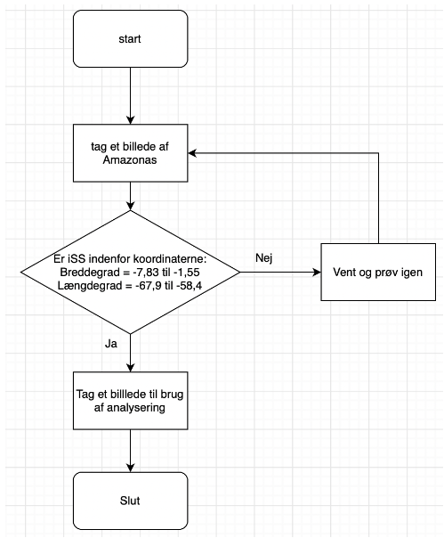

Lavet med Matilde, Alba og Wilma
Projektbeskrivelse:
Vi vil gerne undersøge hvordan planter har det i to forskellige skove som er placeret to forskellige steder. For at gøre dette vil vi bruge et infrarødt kamera som vil kunne fortælle om planterne befinder sig i et godt eller dårligt miljø. Det kan man bruge det infrarøde kamera til da det kan vise hvor meget nær infrarød stråling planterne udsender. Dette indikerer nemlig densiteten og helbredet af planterne i det givne område. Til slut vil vi sammenligne de to skove og se hvilken destination der er mest optimal for planter at leve i.
Gennemgang af ESA’s specifikationer og en vurdering af hvilke rammer det sætter for jeres projekt:
ESA har en masse forskellige specifikationer som ens projekt skal være indenfor. En af disse er at det skal være et videnskabeligt projekt og ikke et spil. Dette har vi opfyldt ved at undersøge planters levestandarder i et spesefikt områder, nemlig Amazonas. Hvilket er videnskabeligt og ikke er et spil. Et andet krav er at forsøget ikke skal afhænge af en specifik begivenhed som muligvis ikke vil finde sted i løbet af de tre timer. Dette lever vores projekt op til da vores forsøg ikke afhænger af nogen specifik begivenhed for at kunne finde sted. Et af ESA’s andre krav er at forsøget ikke må kræve yderligere udstyr eller adgang til noget andet på ISS, hvilket vores projekt lever op til da der ikke er behov for noget andet til at udføre vores forsøg.
Beskrivelse af sensor:
Dataen vi vil samle er billeder af to forskellige skove med et NDVI-filter. NDVI-filteret er et vegetationsindeks som indikerer planternes sundhed baseret på hvordan planter udsender bestemte bølgelængder i det elektromagnetiske spektrum. Det er cellestrukturen i planterne som udsender nær-infrarød stråling, hvilket betyder at når planterne udfører fotosyntese, og de dermed vokser, vil planterne indeholde flere cellestrukturer. Dette betyder at sunde planter udsender mere NIR end planter som ikke trives. Så ved at tage billeder af to forskellige skove vil man kunne bestemme hvilket sted planterne trives bedst.
Gennemgang af relevante kodestumper:
Denne kode bruges til, at tage billeder af vores valgte destination Amazonas. Dette gøres ved at lave en if-statement som ses i linje 6 hvor vi skriver at hvis ISS er indenfor de breddegrader og længdegrader der er skrevet, så skal den tage et billede.

En vedhæftet fil med programkode:
fil til programkode
Vurdering af om vores kode lever op til ESA’s kravspecifikationer:
Vi har udvalgt 3 af ESA’s kravspecifikationer, som vores kode lever op til.

ESA har også nogle specifikke krav til ens kode. Nogle eksempler på disse er kravene: ens program skal bruge mindst en Sense Hat sensor eller kameraet, ens kode må ikke indeholde ondsindet kode, som bevidst prøver at forstyrre systemets funktionalitet og ens program skal ikke bruge netværk. Vores kode lever op til disse tre krav, da vi gør brug af kameraet, vores kode indeholder ikke nogen “ondsindet” kode og den skal ikke bruge netværk.
Grundig beskrivelse af test måling af mindst en måling:
Når man løber vores program vil det være muligt med to forskellige output
Den første testmåling af ISS ikke over Amazonas:
Det første udkom af testmålingerne er hvis ISS-sensoren ikke er over Amazones. I dette tilfælde vil den måle længde- og breddegrad af sensorens lokation og hvor højt over jorden den befinder sig. Ud fra dette ved den, om den er indenfor det givne område, nemlig Amazonas, og når den ikke er det, som i dette tilfælde, så tager den ikke et billede og siger “intet billed”.

Den anden testmåling er ISS over Amazonas:
Det andet udkom af testmålingerne er hvis ISS-sensoren er over Amazonoz. I dette tilfælde vil den igen måle længde- og breddegrad af sensorens lokation og hvor højt over jorden den befinder sig. Den vil igen ud fra dette vide om den er indenfor det givne område, nemlig Amazonas, og når den er det, som i dette tilfælde, så tager den et billede, som ligger vedhæftet nedenfor. Det er et billede af vinduet i klasselokalet.

et billede den tog mens den var over amazonas

Flowchart:
